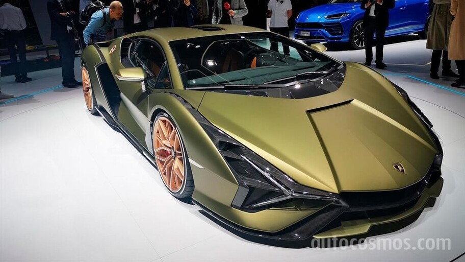
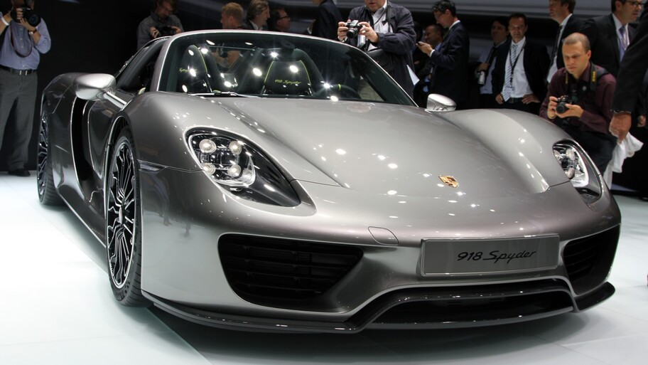
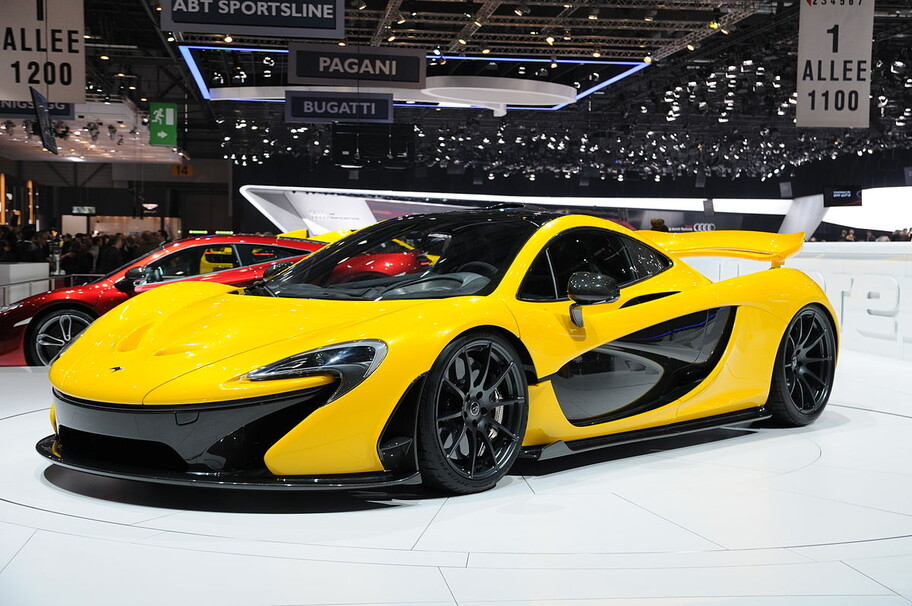
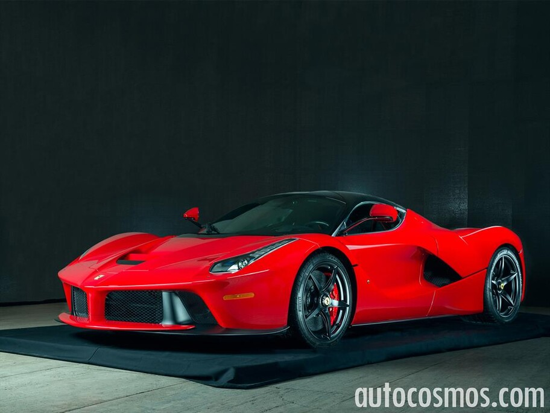
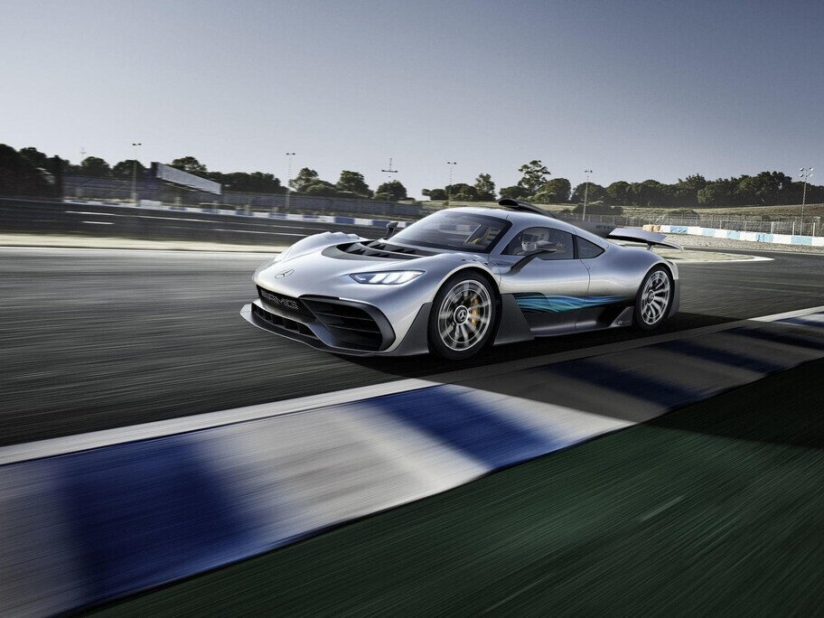
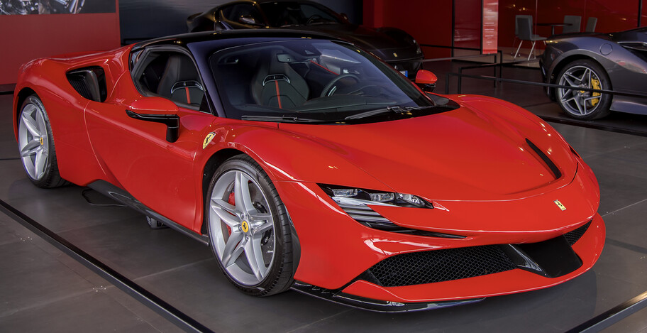
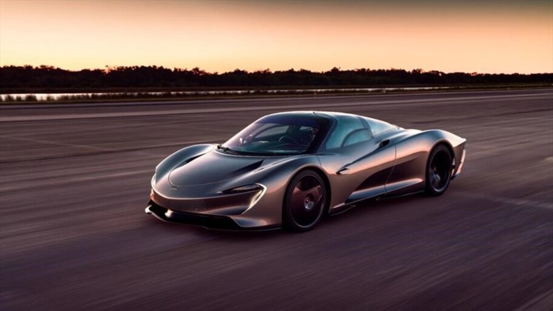
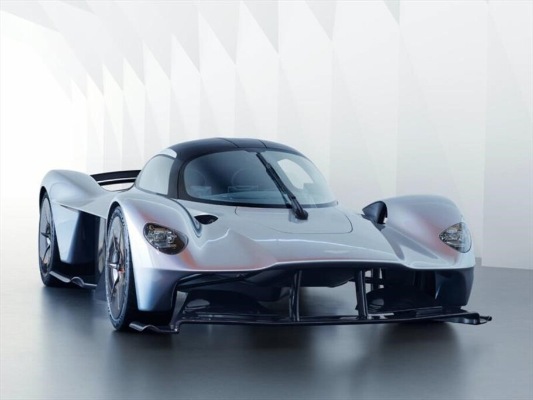
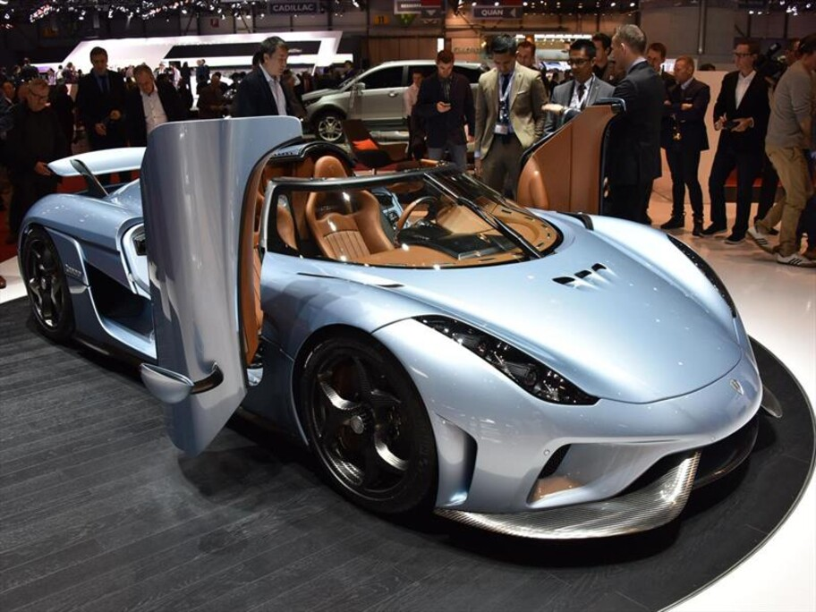
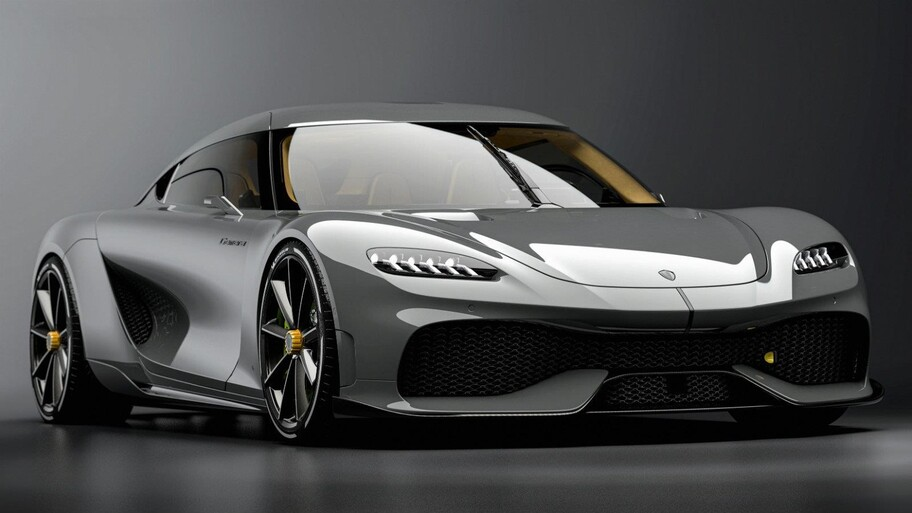

Lamborghini Sián
819 caballos de fuerza. Se trata del primer modelo híbrido fabricado por la casa de Sant'Agata Bolognese
Una galaria de los autos mas veloces y superdeportivos

819 caballos de fuerza. Se trata del primer modelo híbrido fabricado por la casa de Sant'Agata Bolognese

887 caballos de fuerza. Se trata del primer modelo híbrido enchufable de calle fabricado por la firma de Stuttgart

916 caballos de fuerza. Híbrido de enchufe que abrió paso a la familia Ultimate Series del fabricante de Woking y que está limitado a 375 unidades

963 caballos de fuerza. De la firma de Maranello que fungiría como el digno heredero del Ferrari Enzo, y está limitado a 499 unidades.

1.000 caballos de fuerza. Se trata de un superdeportivo inspirado en el concepto AMG Project ONE de 2017

986 caballos de fuerza. Modelo híbrido enchufable más potente del cavallino, mismo que toma como inspiración el monoplaza de F1 del mismo nombre.

1.050 caballos de fuerza. La Ultimate Series del fabricante británico, y que para muchos es el sucesor del icónico McLaren F1.

1.130 caballos de fuerza. Se trata de un ejemplar desarrollado en conjunto con el equipo Red Bull Racing de F1, quien plasmó toda su experiencia en el motor V12 atmosférico de 6.5 litros

1.521 caballos de fuerza. Se trata del sucesor del Koenigsegg Agera, mismo que debutó en 2016 durante el Autoshow de Ginebra. Está impulsado por un motor V8 biturbo de 5.0 litros en conjunto con tres motores eléctricos, uno situado en el eje delantero y los dos restantes en cada llanta trasera.

1.700 caballos de fuerza. Se trata del auto híbrido más potente del mundo que vería la luz durante el pasado Autoshow de Ginebra en 2020. El hiperdeportivo es una verdadera obra de arte de ingeniería, pues hace uso de un motor de apenas tres cilindros, de 2.0 litros biturbo acompañado de tres propulsores eléctricos